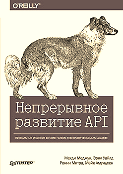

Для реализации API необходимо провести большую работу. Чрезмерное планирование может стать пустой тратой сил, а его недостаток приводит к катастрофическим последствиям. В этой книге вы получите решения, которые позволят вам распределить необходимые ресурсы и достичь требуемого уровня эффективности за оптимальное время. Как соблюсти баланс гибкости и производительности, сохранив надёжность и простоту настройки? Четыре эксперта из Академии API объясняют разработчикам ПО, руководителям продуктов и проектов, как максимально увеличить ценность их API, управляя интерфейсами как продуктами с непрерывным жизненным циклом.

Материал книги основан на наших (Мехди Меджуи, Эрик Уайлд, Ронни Митра, Майк Амундсен) коллективных знаниях, полученных за много лет создания, разработки и улучшения API — как своих, так и чужих. В ней изложен весь наш опыт. Мы определили два ключевых фактора для эффективной разработки API: необходимость продуктоориентированного подхода и формирование правильной команды. Мы также определили три важных фактора для управления этой работой: руководство, развитие продукта и разработка системы API.
Эти пять элементов формируют фундамент, на котором можно построить успешную программу по управлению API. Мы знакомим читателя со всеми этими темами и предоставляем руководство по тому, как вписать их в контекст вашей организации.
С ростом функциональности API становится все важнее управлять развивающимися программами так, чтобы польза и ценность всей совокупности API организации максимально выросли. Необходимо помнить об этом балансе, потому что лучший (или относительно хороший) способ предоставления индивидуального сервиса с помощью API может быть совсем не таким полезным, если смотреть на него с точки зрения легкости использования этого сервиса как части общей системы.
Современные системы API непрерывно растут в смысле общего количества API, а также количества API, используемых новыми сервисами. Учитывая это увеличение взаимозависимостей, мы понимаем, что полезно было бы, если бы разработчикам новых сервисов не пришлось разбираться в совершенно разных дизайнах API и применять их. Различия могут быть кардинальными — например, задействуют ли API стиль REST или событийно-ориентированный стиль (см. подраздел «Дизайн» раздела «Знакомство со столпами» главы 4), — но даже если стили совпадают, могут обнаружиться такие различия, как использование формата JSON или XML.
С точки зрения пользователя API, полезно было бы также иметь общую терминологию. Например, при задействовании нескольких API, предоставляющих пользовательские данные в какой-либо форме, будет проще, если у них у всех будет одна основная пользовательская модель (даже если она представлена слегка по-разному, тем не менее полезно иметь общую модель для разных сервисов).
Мысль о пользе стандартизации со всей очевидностью свидетельствует о том, что чем ее больше, тем лучше. В какой-то мере так и есть, но в то же время известно, что на стандартизацию нужны время и ресурсы, она обычно не сводится к «единственно верной и лучшей модели», а просто создает модель, с которой все могут как-то смириться, и поэтому в целом эта инвестиция имеет как риски, так и преимущества.
Возможно, использование уникального формата для каждого API будет не лучшим решением, разумнее выбрать из существующих, например, JSON или XML. В этом случае плюсы применения существующих стандартов перевешивают вероятные выгоды от уникальных форматов. Однако может быть очень дорого стандартизировать какие-то элементы разных сервисов, например уже упомянутую пользовательскую модель. В этом случае логично не идти на такие неоправданные расходы ради поиска единственно верной пользовательской модели и просто остановиться на модели предметной области.
Говоря в общем, в идеале для каждого сервиса мы хотим не изобретать велосипед заново, когда это не нужно, а использовать повторно те элементы дизайна, которые сокращают затраты ресурсов на создание дизайна, его понимание и реализацию. Если мы сможем достичь такого идеального уровня повторного применения или хотя бы приблизиться к нему, это позволит создателям сервисов сосредоточиться на тех аспектах дизайна, на которых нужно сосредоточиться, не отвлекаясь на уже решенные проблемы.
Мы видим, что все больше организаций поступают именно так. Но самое важное в этом — понимать и удостовериться, что руководства для дизайнеров постоянно обновляются: оцениваются и утверждаются новые методики, старые методики выходят из обращения, а главной движущей силой этих изменений является постоянно эволюционирующий набор методик API в организации.
Важно понимать, что система API — это подвижная и постоянно меняющаяся среда, и чтобы она продолжала работать, архитектура должна следовать по такому же пути непрерывного развития. Тогда она становится похожа на очень масштабную систему, например Интернет, который, с одной стороны, работает все время, а с другой — непрерывно меняется и в нем постоянно возникают новые стандарты и технологии.
Хотя сейчас мы наблюдаем большое количество организаций, которые только начинают создавать программы с API, важно помнить, что в любой организации, в которой использовались информационные технологии, практически наверняка уже существуют какие-то API, применяющиеся уже долгое время.
Если исходить из определения, то API — это любой интерфейс, позволяющий двум программным компонентам взаимодействовать. Если сузить определение до современного понимания сетевого API, то это любой интерфейс, позволяющий двум программным компонентам взаимодействовать через сеть.
Во многих организациях такие интерфейсы не называются API, и они не созданы для повторного применения (вспомните историю о знаменитом уставе API Джеффа Безоса, которую мы рассказывали в подразделе «Устав Безоса» раздела «Дизайн-мышление» главы 3). Но чаще всего эти интерфейсы существуют, даже если они были созданы и использовались для интеграции только для разового применения (подрывая этим одно из главных полезных свойств API — возможность повторного использования).
Поиск и применение таких прото-API может быть полезен, потому что он показывает, где появлялась необходимость в интеграции (даже если она создавалась с помощью методов, не соответствующих целям API). Не все эти прото-API стоит заменять обычными API, но просто разобравшись в истории, можно получить идеи по поводу того, как наблюдалась необходимость в интеграции, что предпринималось в этой области и где может появиться необходимость в дополнительной интеграции.
ПРОТО-API
Необходимость во взаимодействии компонентов существует во всех сложных системах, состоящих из отдельных частей. API — один из способов осуществления этого, но есть и множество других. С точки зрения API любой механизм, применяемый для взаимодействия компонентов и не являющийся API, может считаться прото-API. В идеальной системе с помощью API выполняются все взаимодействия компонентов без исключения. Если помнить об этом идеальном образе, любое взаимодействие без помощи API становится кандидатом на модернизацию — на то, чтобы его заменили на API. Поэтому любой механизм взаимодействия компонентов без помощи API можно считать прото-API.
В целом археология API может помочь вам лучше понять систему API, даже если сейчас она состоит в основном из прото-API. Она обеспечивает стартовую точку для понимания необходимости интеграции, возникавшей в прошлом, и того, с помощью каких инвестиций в API можно лучше всего распутать грозящую возникновением проблем сеть из множества пользовательских интеграций. С опытом и со временем заменять интеграции, созданные до появления API, современными моделями становится все проще.
Управление API в больших масштабах — это балансирование между введением общего дизайна на уровне системы и максимальным увеличением свободы выбора дизайна на уровне отдельных API. Выбор между централизованной интеграцией ради согласованности и оптимизации и децентрализацией ради гибкости и возможности развития — это обычная проблема сложной системы.
ДЕЦЕНТРАЛИЗАЦИЯ И ИСПОЛНЕНИЕ
Если мы что-то и узнали из не до конца исполненных обещаний времен сервис-ориентированной архитектуры, основанной на SOAP, так это то, что тщательно управляемое исполнение — ключевой аспект реализации перспектив ориентированности на сервисы. SOAP исполнял обещание предоставить доступ к функциям, но не справлялся с такой же важной задачей правильного управления исполнением функций. Таким образом, хотя SOAP и был полезен (в качестве сервисов появились функции, прежде недоступные), он не соответствовал потребностям в более гибкой и развивающейся среде.
Сложность управления системой API заключается в том, чтобы запомнить эту проблему и избежать ловушки, в которую попал SOAP. В SOAP говорилось, что важна только доступность сервисов. Это был важный первый шаг, но он не позволил справиться со слабой связанностью функций. API и, если особо фокусироваться на техниках реализации и развертывания, микросервисы позволяют нам еще раз обдумать, что важно для больших систем сервисов и как создавать системы, не попадающие в ловушку SOAP.
Принцип платформы
Многие говорят о платформах, обсуждая API и основные цели бизнеса. Однако при этом могут иметь в виду совершенно разные вещи. Важно помнить: если на уровне бизнеса кажется удачной идеей создавать что-то как платформу, это не значит, что именно так это надо разрабатывать на техническом уровне.
На уровне бизнеса платформа предоставляет то, на чем можно что-то построить, и глубже этой довольно размытой формулировки мы зайти не сможем. Часто на привлекательность понятия «платформа» влияют два основных фактора.
Эти параметры очень важны для бизнеса, однако существует фактор, о котором часто забывают: платформы всегда заставляют пользователей придерживаться определенных ограничений, но делают это по-разному. Вот примеры.
Можно применить этот шаблон и к системам API и идее создания платформы API для приложений.
Иногда под платформой API подразумевается конкретная среда, предоставляющая доступ к API. Вскоре это начинает слегка напоминать традиционную шину служб предприятия, где подобная платформа должна предоставлять инфраструктуру, а API становятся доступными благодаря тому, что могут ее задействовать.
В других случаях, говоря о платформе API, имеют в виду общий набор принципов, используемый и предоставляемый сервисами. В таком случае, если сервис становится частью платформы, это никак не связано с тем, где и как открывается к нему доступ. Если сервисы придерживаются одних и тех же принципов, протоколов и шаблонов, они предоставляют API на этой платформе и, таким образом, становятся частью системы API.
Второй тип платформы более абстрактный, но в то же время у него больше возможностей. Разделяя то, что выполняют функции, и то, как они это делают, он облегчает вклад пользователей в платформу. А также открывает много путей для инноваций, позволяя приложениям экспериментировать с методами реализации, не ставя под удар их возможности вносить вклад в систему API.
И снова возьмем в качестве примера Интернет. Если смотреть только с точки зрения API, он позволяет многому меняться со временем. Например, сеть передачи данных (Content Delivery Network, CDN) не встроена в сам Интернет. Ее существование стало возможным из-за сложности содержимого Интернета и гибкости браузера, позволяющего генерировать веб-страницы, основываясь на нескольких источниках, взятых, возможно, из разных мест. На это можно возразить, что потенциал для создания CDN уже существовал в принципах и протоколах самых первых веб-страниц, но шаблон CDN появился только тогда, когда в нем возникла необходимость.
Именно эта способность подстраиваться под новые задачи требуется и в системах API. Мы проектируем систему, основанную на открытых и расширяемых принципах и протоколах, но можем и хотим при необходимости менять ее. Мы также создаем шаблоны поддержки, помогающие приложениям более эффективно решать проблемы, и хотим развивать со временем и эти шаблоны.
Принципы, протоколы и шаблоны
Главный вывод из предыдущего раздела: платформа не должна требовать одного конкретного способа что-то делать (ответа на вопрос «Как?») или одного конкретного места (ответа на вопрос «Где?»). Хорошая платформа создана для непрерывной разработки архитектуры, то есть архитектура платформы (а не только архитектура продукта) постоянно развивается, а не разрабатывается сразу вся, чтобы потом пребывать неизменной все время своего существования.
НЕПРЕРЫВНАЯ РАЗРАБОТКА АРХИТЕКТУРЫ
Непрерывная разработка архитектуры — это методика постоянного развития основ архитектуры продукта. Отдельные продукты создаются с использованием существующих основ архитектуры, и по отчетам о применении этих основ можно улучшить архитектуру продукта, делая ее более эффективной.
Гибкая методология разработки и DevOps посвящены улучшению разработки отдельных продуктов. Они не рассказывают о том, как улучшать основы этого процесса, чтобы более эффективная архитектура системы была полезна для архитектуры продукта. Непрерывная разработка происходит, когда отдельные продукты создаются в рабочем окружении уже существующей системы. Система облегчает создание новых продуктов, а они помогают системе найти области, требующие улучшения, таким образом создавая цикл обратной связи.
Непрерывная разработка архитектуры фокусируется на развитии основы, не вредящем уже существующим продуктам и позволяющем создавать комбинации продуктов. В идеале основы архитектуры все время развиваются так, чтобы быть совместимыми с предыдущими версиями, поэтому работа системы почти не нарушается.
Чтобы непрерывная разработка архитектуры стала возможной, платформа должна быть создана на принципах, протоколах и шаблонах. Мы можем проиллюстрировать эту мысль с помощью веб-платформы. Давно известно, что Интернет потрясающе устойчив и в то же время гибок. За прошедшие почти 30 лет его основная архитектура не менялась, но, разумеется, заметно эволюционировала. Как это явное противоречие стало возможным? Ведь другие системы сталкиваются с проблемами гораздо быстрее, двигаясь по менее радикальным траекториям.
Одна из главных причин заключается в том, что ничто в Интернете не показывает, как именно реализуется или задействуется определенный сервис. Сервисы могут быть реализованы на любом языке, и, разумеется, с годами они меняются, поскольку меняются и языки программирования. Они предоставляются с помощью любой работающей среды — сначала это были серверы, располагающиеся в подвалах, теперь размещенные в самом Интернете, а в последнее время появляются и облачные хранилища. Сервисы могут быть использованы любой клиентской программой — они тоже кардинально изменились от простых браузеров на основе командной строки до сложных графических браузеров на современных мобильных телефонах. Фокусируясь исключительно на интерфейсе, который определяет, как происходят распознавание информации, обмен ею и демонстрация, архитектура Интернета оказалась лучше приспособлена к естественному росту, чем любая сложная IT-система, которую мы видели. Причины этого удивительно просты.
Зачастую шаблоны развиваются со временем, чтобы соответствовать меняющимся требованиям. Например, идентификация на основе браузера была относительно широко распространена на заре Интернета, потому что ее можно было легко контролировать с помощью конфигурации сервера и она хорошо работала для относительно простых сценариев того времени. Но с ростом Сети ограничения такого подхода стали очевидными, поддержка идентификации стала стандартной функцией во всех популярных фреймворках для веб-программирования, и этот более гибкий подход заменил прежний метод идентификации через браузер.
Важно помнить, что эта петля обратной связи и ответственна за успех Интернета. Архитектура платформы начинается с простых решений. Появляются приложения, и какие-то из них расширяют границы того, что поддерживает платформа. При наличии спроса к платформе добавляются новые характеристики и функции, и это облегчает создание новых приложений, использующих данные функции. В обязанности архитекторов платформы входит наблюдать, где именно приложения расширяют границы, помогать разработчикам переходить их и развивать платформу, чтобы она лучше отвечала потребностям разработчиков.
В системах API происходит такая же эволюция методов. И в ней надо видеть не проблему, а особенность, потому что по мере того, как команды обучаются и появляются новые шаблоны, а иногда даже протоколы, методы можно подстраивать и улучшать. Секрет успешных программ с API — подходить к ним как к непрерывно развивающимся, разрабатывать их и управлять ими так, чтобы эта эволюция продолжалась.
Системы API как языковые системы
Каждый API представляет собой особый язык. Он заключается во взаимодействии тех, кто предоставляет сервис и кто им пользуется, когда появляется определенная функция. Но важно запомнить, что в данном разделе термин «язык» относится к взаимодействиям с API, то есть к его дизайну, а не к внутренней работе API, то есть его реализации.
Некоторые аспекты языка отдельного API решаются на фундаментальном уровне.
Главный вывод из сказанного состоит в том, что управление языками — важная часть управления системой. Как и во всех системах, управление языками — сложная задача. Если их слишком сильно унифицировать, пользователи системы будут чувствовать себя скованно и не смогут самовыражаться так, как им хочется. Если же не пытаться поощрять возникновение общих языков, в системах появится множество решений одной и той же проблемы и они станут очень сложными.
Один из самых распространенных шаблонов управления системой API — продвигать повторное использование языка с помощью пряника, а не кнута.
С применением метода пряника набор предложенных языков со временем будет и должен развиваться. Если возникают новые языки, должны появляться и новые способы доказать их пользу, и если это получится, их тоже добавляют в список.
В итоге языки могут «попасть в опалу» из-за появления более успешных конкурентов или из-за того, что пользователи просто начали пользоваться другим методом работы. Это давно происходит в сфере XML/JSON. Хотя существует много XML-сервисов, сейчас выбором по умолчанию для API является JSON (а через несколько лет, возможно, мы увидим, как он постепенно замещается другой технологией).
Выражать API через API
Масштабирование API предполагает, что, когда приходит время расширяться, у вас уже есть план автоматизации растущего количества задач для отдельных API и для системы. Автоматизация требует точного определения того, как открывается доступ к информации и предоставляется возможность собирать и использовать ее. Если задуматься, то задача открытия доступа к информации и есть основное предназначение API! Это приводит нас к главной мантре выражения API через API: «Все, что вы хотите сказать об API, нужно выразить с помощью этого API».
Таким образом, мы знакомимся с идеей о том, что важная часть масштабируемого управления системой API вращается вокруг идеи применения так называемого API для инфраструктуры (или, точнее, компонента инфраструктуры в существующих API). Очень простым примером такого API для инфраструктуры может послужить способ демонстрации информации о состоянии API. Если каждый API соответствует стандартному шаблону (подробнее об этом — в подразделе «Словарь» раздела «Восемь аспектов систем API» далее), автоматизировать задачу сбора информации о состоянии всех API очень легко. Если упростить, это выглядит примерно так.
По этому сценарию легко написать скрипт, регулярно собирающий эту информацию, и, основываясь на ней, создать инструменты и новые идеи. Это стало возможно, потому что компонентом API является стандартный способ доступа к определенным аспектам API.
Теперь мы понимаем, что управление системой API и ее развитие частично зависят от развития способов использования API для подобной автоматизации, когда это необходимо. Задействуя принципы непрерывной разработки архитектуры, можно со временем добавлять эту информацию и модифицировать при необходимости уже существующие сервисы.
В этом примере открытие информации о состоянии стало новым шаблоном и появилась методика применения этой информации. Новая методика может из экспериментальной стать реализуемой, если в системе API используются такие категории в указаниях по дизайну. В дальнейшем она может перейти в состояние увядающей и устаревшей, когда ее будут задействовать только старые сервисы, если в какой-то момент система перейдет на другой способ демонстрации состояния API.
В последнем абзаце мы использовали слова «экспериментальная», «реализуемая», «увядающая» и «устаревшая» в качестве возможных состояний процесса руководства. Мы не предлагаем вам пользоваться именно этим набором, но важно понимать, что любое руководство также развивается со временем. То, что когда-то было удачным способом решения проблем, может быть заменено более быстрым и устойчивым методом. Руководство должно помогать командам решать, как им разбираться с проблемами. Если команды будут отслеживать состояние методик, им станет проще понимать, как они развиваются, поэтому разумно следить за тем, какие решения удачны сейчас, какие могут стать удачными в будущем и какие считались удачными в прошлом. В разделах «Структурирование руководства в системе API» и «Жизненный цикл руководства в системе API» главы 9 мы обсудим конкретные способы структурирования и развития руководства подробнее.
Решение проблемы методом, который становится элементом дизайна API, упрощает управление большими системами API, потому что определенные элементы дизайна повторяются среди API и их можно использовать для автоматизации.
Понимание системы
Системы API не отличаются от других систем продуктов или функций, цель которых — развиваться легко и почти беспрепятственно и служить прочным фундаментом для создания новых функций, внутренних или внешних. Во всех этих случаях достигают компромисса между оптимизацией ради одной известной цели и оптимизацией ради облегчения изменений. Оптимизация ради облегчения изменений всегда требует компромиссов при наличии фиксированных целей. Ключевые факторы изменяемости — открытость системы для эволюции и управление ею таким образом, который позволяет вносить новые идеи в текущее состояние системы и в ее динамику с течением времени.
В этой картине важное место занимает мысль, которую мы обсудили в предыдущем разделе: все, что должно быть сказано об API, должно быть выражено с помощью самого API. Это может быть так же просто, как предоставление информации о состоянии, упомянутое ранее, или куда более сложно, как, например, требование, согласно которому вся документация по API должна быть частью самого API, или управление безопасностью API через сам API. При таком подходе API переходят на самообслуживание, открывая доступ к информации, которая нужна для их понимания и использования.
Иногда такой подход может стоить дорого. Если брать крайний случай, когда вы хотите создать API, открытые для доступа миллионам разработчиков, тогда имеет смысл сделать их максимально высокотехнологичными, чтобы разработчики могли максимально легко понять и применить их. В этом случае появляется продукт, разработанный для масс-маркета, и поэтому он оптимизирован именно для такого использования.
В большинстве систем API появятся сотни или тысячи API, и невозможно, да и не обязательно, доводить их до такого же идеала, как продукты для масс-маркета. Но и небольшая стандартизация может потребовать большой работы, например: убедиться, что команда по API легко находит контактную информацию, предоставитьминимальную документацию, распознаваемое машиной описание и, возможно, создать несколько примеров для начала.
А когда кажется, что API нужно еще слегка отполировать, может помочь эволюционная модель системы: команды по API начинают применять методы улучшения опыта разработчика, и эти методы становятся установленными и получают поддержку. Повторим еще раз: важно наблюдать, где появляется необходимость изменения, какие решения используются в API, и поддерживать методики, которые вы хотите закрепить на уровне системы.
Об авторах
Мехди Меджуи — предприниматель в сфере API, один из основателей OAuth.io и создатель конференций APIDays — всемирной серии конференций по API, которые проводятся каждый год в семи странах. Как ведущий экономист API в Академии API, Мехди советует людям, принимающим решения в этой сфере, помнить о влиянии API на стратегию цифровой трансформации на микро- и макроуровнях. Он разработал дизайн системы индустрии API, является соавтором доклада «API для банков: состояние рынка», с 2015 года служит экспертом Европейской комиссии по API для проекта «Цифровое правительство». Кроме того, он читает лекции по предпринимательству в цифровую эпоху в парижской бизнес-школе HEC и является советником в нескольких стартапах по инструментам для API.
Эксперт в дизайне протоколов и структурированных данных Эрик Уайлд консультирует организации, помогая им получить максимальные результаты от работы с API и микросервисами. Эрик занимается разработкой инновационных технологий с момента появления Интернета и активно сотрудничает с IETF и W3C. Он получил докторскую степень в Высшей технической школе Цюриха, преподавал в ней и в университете Беркли, после чего работал в компаниях EMC, Siemens и в последнее время в CA Technologies.
Ронни Митра помогает крупным и мелким компаниям по всему миру улучшить дизайн и системную архитектуру в организации. В качестве ведущего дизайнера Академии API он сочетает работу с принципами UX и сложностью системы, чтобы решать задачи по созданию эффективных программ с API и установлению практических стратегий трансформации.
Майк Амундсен, известный писатель и лектор, путешествует по миру, дает консультации и читает лекции об архитектуре сетей, веб-разработке и пересечениях между технологиями и обществом. Как ведущий разработчик архитектуры API в Академии API он работает с компаниями, чтобы помочь им повысить доход, реализуя возможности, предоставляемые API пользователям и предприятию.
Более подробно с книгой можно ознакомиться на сайте издательства
» Отрывок
Для знающих людей скидка 25% по купону — API
По факту оплаты бумажной версии книги на e-mail высылается электронная книга.